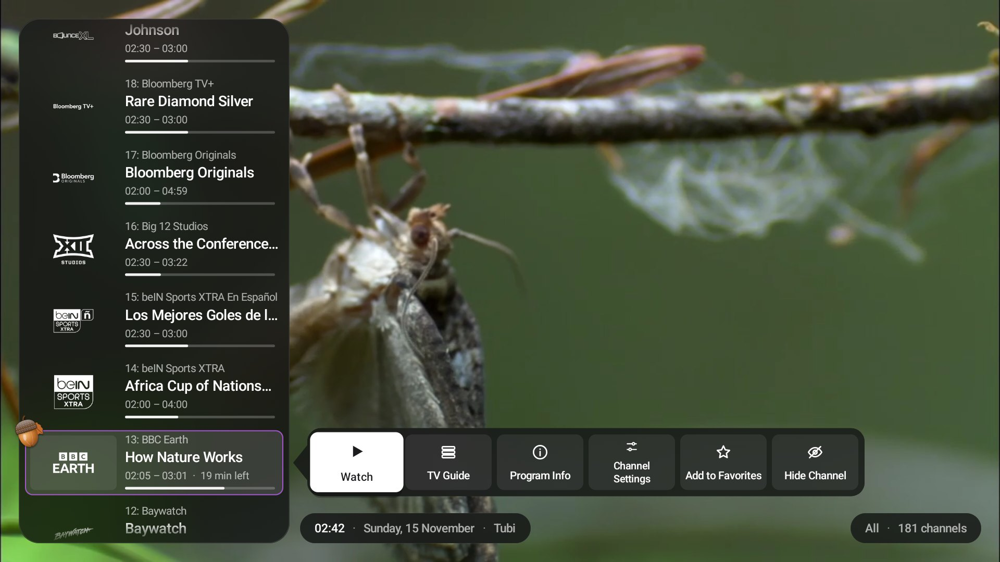
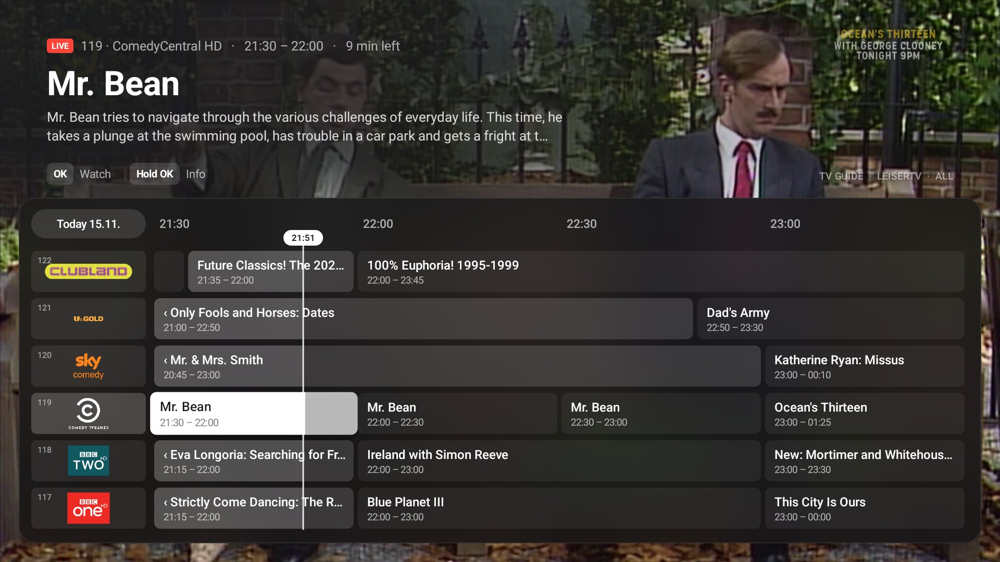
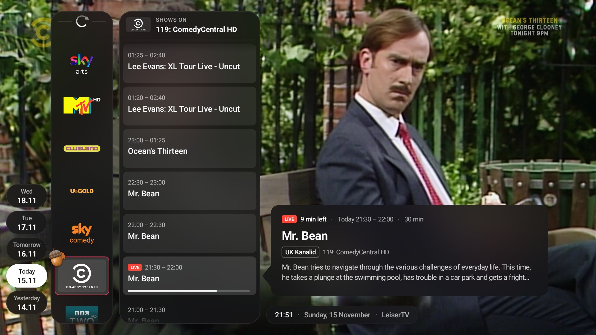
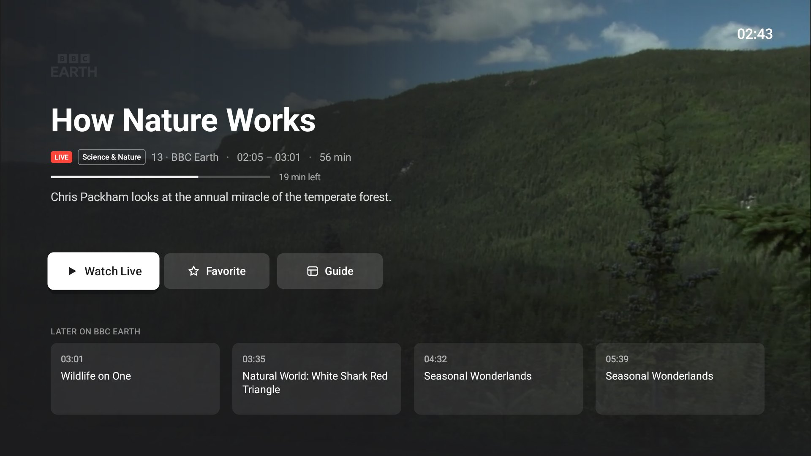
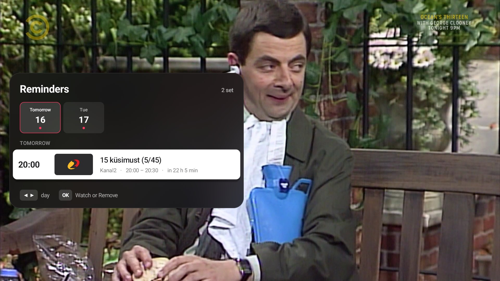
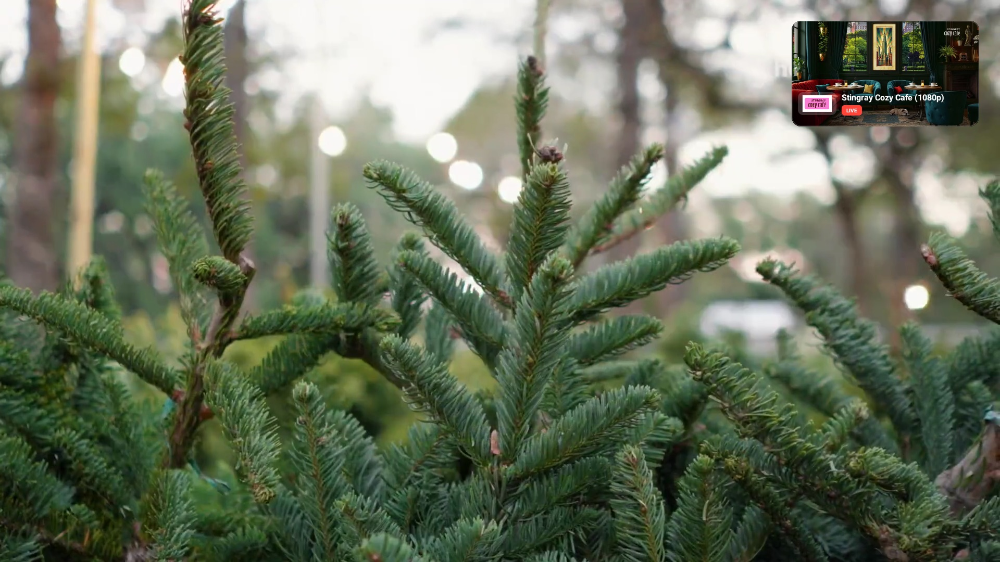
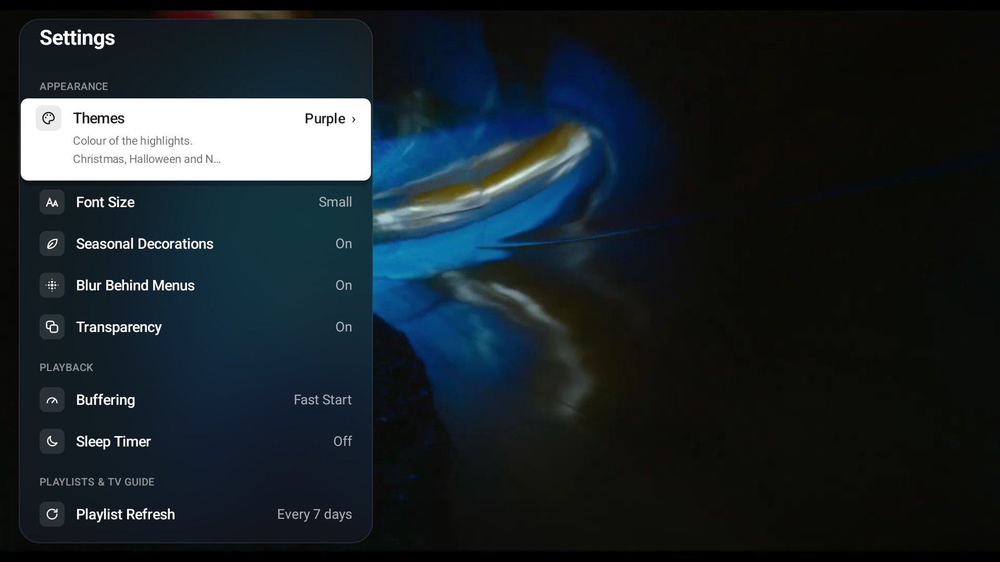

LiteTV manual
Everything LiteTV can do, and how to get to it with the remote. Written for version 2.4.
Getting started
LiteTV comes empty: it has no channels of its own. You add one or more M3U playlists (a link from your IPTV provider) and, if you want to see what's on, a TV guide (an EPG or XMLTV link).
From your phone (easiest)
- Hold OK (or press Menu) to open the main menu, and choose Playlists.
- Scan the QR code with your phone, or type the address shown on the TV into a browser. The phone and the TV must be on the same Wi-Fi.
- Add a playlist: a name and its M3U link. Press Save.
- For the guide, add an EPG link to the playlist on the same page, or open Shared EPGs to add one guide and use it for all playlists or only some.
If a playlist has no guide set, LiteTV uses the guide named in the M3U file itself, if it names one.
On the TV
In the Playlists window, choose Add Playlist Here and type the name and link with the remote.
The remote while watching
| Button | What it does |
|---|---|
| Menu or hold OK | Main menu: Search, Playlists, TV Guide, Reminders, Hidden Channels, Settings |
| OK or Info | The OK screen: what's on, and the channel's own settings |
| Left | Channel list |
| Right | Quick Guide |
| Guide or Blue | TV Guide grid |
| Up / Down, CH+ / CH− | Change channel |
| 0–9 | Type a channel number; it shows big in the top-right corner |
| Back | The channel you watched before (with a channel pinned: swap with it) |
| Hold Back | Closes every menu at once. With nothing open, it unpins a pinned channel, and only then exits the app |
| Yellow | Swap with the pinned channel |
| Play/Pause, ⏩ / ⏪ | Pause, and skip 30 seconds when the channel allows it |
Every one of these can be changed or given extra buttons in Settings › Remote Buttons.
The OK screen

Press OK while watching to see what's on now, how far along it is and a row of tiles. It hides itself after 5 seconds if you don't press anything.
- Program Info and TV Guide: see Program Info and TV Guide.
- Pin: keep this channel playing in a corner. See Pin a channel.
- Audio and Subtitles: pick a language or track. Dimmed with "Only one" when the channel has just one.
- Aspect ratio: Fit shows the whole picture. Many channels send a 16:9 picture with black bars inside it; Zoom enlarges the picture and trims the edges, Wider removes bars at the sides and Taller bars at the top and bottom.
- Audio delay: fixes sound that is out of step with the picture, from −30 to +30 seconds in 50 ms steps. Left / Right jump a whole second. Plus means the sound comes later.
Audio, subtitles, aspect ratio and delay are saved for each channel, and used again every time it plays.
Channel list

Press Left. Each channel shows its logo, the show on now, a LIVE badge, minutes left and a progress bar. The channel you're watching keeps a grey box round its logo.
- The list goes round: after the last channel it starts again at the first, marked with a thin line and a round arrow.
- Three quick taps of Up or Down jump to the top or the bottom.
- Right on a channel opens its buttons: Watch, TV Guide, Program Info, Channel Settings, Add to Favorites and Hide Channel.
- Left again opens the categories and playlists.
Playlists and categories
In the channel list, press Left for the Categories of the current playlist, and Left again for Playlists. OK picks one.
- The first row of Playlists is ★ Favorites, with "All Favorites" and your favorite groups as its categories.
- The playlist you're on has a tick.
Move or remove a playlist
- In Playlists, select a playlist and hold OK. A small card opens beside it: Move, Remove, Cancel.
- Move picks it up: its grab handle turns into arrows. Up / Down moves it, OK drops it. The new order is saved right away.
- Remove asks first, and starts on Cancel so a stray press is safe. Removing a playlist also removes its own guide. Your favorites from it stay saved and come back if you add it again.
Favorites always stays at the top and can't be moved. If you remove the playlist you're watching, LiteTV switches to the first one; if you remove the last one, it opens the setup screen.
TV Guide

Every channel down the side and its shows across a two-hour timeline. A line marks the current time and the played part of each live show is shaded. Open it with Guide / Blue, from the main menu, the OK screen or the channel list's buttons.
- OK on a live show watches it, on a later show sets a reminder, and on a past show plays it as catch-up (when the channel offers that).
- Hold OK for Program Info.
Quick Guide

One channel at a time, day by day, beside the picture: press Right. Flip through channels to see what's on later without leaving the one you're watching.
- The chosen day is a white pill. Picking another day lands on the show at the same time of day.
- OK on a date goes to its shows; OK on a show watches it, sets a reminder or plays catch-up, like the TV Guide.
Program Info and catch-up

A full page about one show: category, channel, time, minutes left and the description, with Watch and Guide buttons. The Later on row lists the next shows on that channel; select one and press OK to set or remove a reminder.
Catch-up: on channels that keep past shows, pick a show that has ended in the TV Guide or Quick Guide to play it from the start. A bar shows where you are, and you can skip back and forward. The number buttons do nothing during catch-up, so a stray press won't throw you back to live TV.
Reminders

Set a reminder on any show that hasn't started yet, from the TV Guide, the Quick Guide or Program Info. When it starts, a card asks if you want to switch to it.
- Reminders repeat: every airing of that show at that time on that channel gets one, until you remove it. Episode numbers like (1/8) don't matter.
- The Reminders page in the main menu shows only the days that have reminders, each with its time, channel logo and show. OK opens Program Info.
Favorites
Add a channel with Add to Favorites in the channel list's buttons. Favorites from all your playlists are together under ★ Favorites, the first row of the Playlists panel.
- Favorites are grouped by the channel's group in its playlist (News, Sport and so on). Channels without a group go under "Other".
- Change how they're sorted in Settings › Favorites: by your custom groups, order added, channel number, A to Z or Z to A. Within Groups sorts the channels inside each group, and Reorder Groups puts the groups in your own order.
- Favorites are kept by the channel's address, so they survive playlist refreshes and removing a playlist.
Pin a channel

Keep a second channel playing, muted, in a corner while you watch another. Handy for waiting out an ad break.
- On the channel you want to keep, press OK and choose Pin. It shrinks into a corner, with its logo, the show, LIVE and the time left.
- Change to another channel as usual.
- Back or Yellow swaps the two: the pinned one goes full screen, the other moves to the corner.
Press OK and select the pinned tile for Swap, Corner (each OK moves it to the next corner) and Unpin. You can also hold Back with no menus open to unpin.
Settings

Main menu › Settings. Six categories; the selected row explains itself under its name.
- Remote Buttons
- Every action with its buttons. Add your own button to any action, or reset to the defaults. Actions: Open Main Menu, Channel Settings, Channel Up / Down, Channel List, TV Guide, Quick Guide, Previous Channel, Swap Pinned, Play / Pause and Skip 30 s.
- Appearance
- Themes: eight colours (Purple, Blue, Teal, Green, Yellow, Orange, Pink, Graphite), plus Christmas (snow and a garland), New Year (gold confetti) and Halloween (bats). Font Size: Smaller to Large. Seasonal Decorations: a small holiday icon by the LiteTV name. Blur Behind Menus and Transparency: turn them off for solid menus, lighter on slow TVs.
- Playback
- Buffering: Fast Start (default) or Steady, for weak Wi-Fi. Sleep Timer: stops playback after a while.
- Playlists & TV Guide
- How often playlists and the guide refresh (or manual only), how many days of guide to keep, and Update EPG Now.
- Favorites
- Favorites Sort, Within Groups and Reorder Groups. See Favorites.
- App
- App Update, the Error Log (what went wrong with streams and downloads), and About: version, your playlists and guides, this TV, and QR codes for GitHub and Ko-fi.
Backup and restore
On the phone setup page (main menu › Playlists, scan the code), Download backup saves your playlists, guides and favorites in one file. On another TV, open the same page and use Restore from file. Restoring replaces the lists on that TV.
Updates
LiteTV checks for a new version when it starts and about every 12 hours. When one is out, a notice says so, and the main menu shows "Settings ● Update". Install it from Settings › App › App Update. Updating keeps your playlists and settings.
Fixing common problems
- The picture stops or stutters
- Set Settings › Playback › Buffering to Steady. It starts a little slower but copes better with weak Wi-Fi.
- Menus feel slow
- On slower TVs (like the Chromecast with Google TV HD), turn off Transparency and Blur Behind Menus under Appearance.
- Sound and picture are out of step
- Press OK › and use Audio delay. It's saved for that channel only.
- Black bars round the picture
- Press OK › Aspect ratio › Zoom, Wider or Taller.
- The guide is empty or out of date
- Check the playlist has a guide on the phone setup page, then run Settings › Playlists & TV Guide › Update EPG Now. How many days you get depends on the guide file.
- A channel won't play
- Look in Settings › App › Error Log. Often the stream itself is down; try it again later.